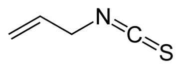
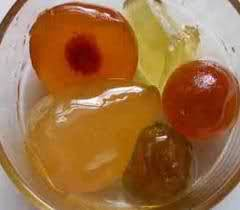

Vero che sono sempre complicate e aggrovigliate le associazioni di idee?
Ne cercavo una per il dodicesimo Carnevale della Chimica (che sarà ospitato dal 23 dicembre nel blog di Tania Scienceforpassion riguardo il tema della Chimica nel periodo natalizio e cosa mi è venuto in mente?
Nientemeno che l'isotiocianato di allile...

Che è successo? Improvvisa fusione neuronica nel mio brain? Intossicazione acutissima da composti cianosolforati? No, molto più semplice, adesso spiego il motivo di tale strana associazione mentale che di solito mi viene in questo periodo.
Il fatto è che poco prima delle feste di Natale è consuetudine che arrivi qui da me in famiglia un benedettissimo "pacco aziendale" (fin che dura... coi tempi che corrono, sarà l'ultimo?), che viene aperto da tutti con grande soddisfazione dato che contiene sempre cose gradite e altamente commestibili, oltre che in definitiva "regalate", il che non è per niente secondario.
In questo pacco ogni anno c'è fra l'altro... un vasetto di mostarda!
Ecco, ora tutto si spiega, vero?

Tutti sanno che nella vera mostarda, quella da intenditori, (quest'anno era quella mantovana) ci va la senape e la senape contiene appunto l'isotiocianato di allile, CH2=CH-CH2-N=C=S per dare quel delizioso e caratteristico gusto piccante, assolutamente diverso dal peperonico piccante della capsaicina.
Mettere la senape nella mostarda non è semplice, come diceva la buon'anima di mia nonna: ce ne deve andare la giusta quantità, nè troppo, chè altrimenti il prodotto rischia di diventare una brace ardente che ti leva il fiato, nè troppo poco perchè ciò porta ad una massa fruttosa solo dolce e inconcludente.
Nei prodotti commerciali, pur buoni, (quelli del nostro pacco lo sono) trovo difficile riscontrare questo giusto equilibrio tra frutta e senape e noto ogni anno con stupore che talvolta si tende ad esagerare in maniera sciocca con l'isotiocianato, come se si volesse virtualmente assassinare l'ignaro consumatore togliendogli il respiro.
Ricordo che qualche anno fa, aprendo un bel vasetto di una fine mostarda cremonese, si faceva sentire in tavola adirittura l'azione lacrimogena del composto allilico... figurarsi l'assaggio orale del medesimo... costituiva un vero attentato Natal-terroristico.
Nemmeno nella battaglia della Somme del 1916 si trovava in giro una quantità così massiccia di "mustard gas" come c'era in quella confettura che si dava arie di eccellenza.
Il vasetto dovette rimanere aperto (ben protetto, ma aperto) fino a inverno inoltrato per poter essere consumato, sfruttando la nota volatilità dei tiocianati alchilici; inutile dire che il titolare dell'azienda produttrice, da me gentilmente invitato a casa mia a mangiarsi un pezzetto del suo mandarino candito, non si è mai presentato... sicuramente sapendo a cosa andava incontro.
[L'assorbimento della senape è molto selettivo da parte della frutta: i mandarini canditi sono quelli che in assoluto ne assorbono di più, la zucca quella che ne assorbe di meno]
Naturalmente non pretendevo sul serio che venisse da me a fare il diabolico assaggio, ma solo che rispondesse alle mie argomentazioni quantitative: lo sto ancora aspettando, con un bel cucchiaio di allile isotiocianato al 92%, più o meno come ce n'era nella sua spocchiosa e famigerata mostarda, marca...
Si dirà che forse sono io che sono troppo delicato!
Macchè delicato! I cibi piccanti sono da sempre la prassi nella mia famiglia; qui si è sempre grattato il cren (ancora la stessa sostanza!) e fatte mostarde, con quella bella bottiglietta spigolosa col contagocce che io annusavo cautamente da bambino, specialmente in ottobre al tempo delle mele cotogne, facendomi a volte mancare il respiro.
(Forse è da allora che ho imparato ad annusare come si deve le sostanze chimiche, con l'opportuna cautela e facendo vento con la mano).
Comunque se ne usava la giusta quantità, come logica e gusto esigevano ed esigono.
Ora la maggior parte delle persone (non tutti per fortuna) hanno paura del piccante e lo sfuggono.
Ecco perchè non mi spiego questo paradosso natalizio da cui sono nate queste estemporanee riflessioni: fare certe mostarde così gravide di CH2=CH-CH2-N=C=S da farmi fare, ogni volta che vien Natale, tali strambe associazioni di idee!
B u o n N a t a l e a t u t t i !
8 commenti